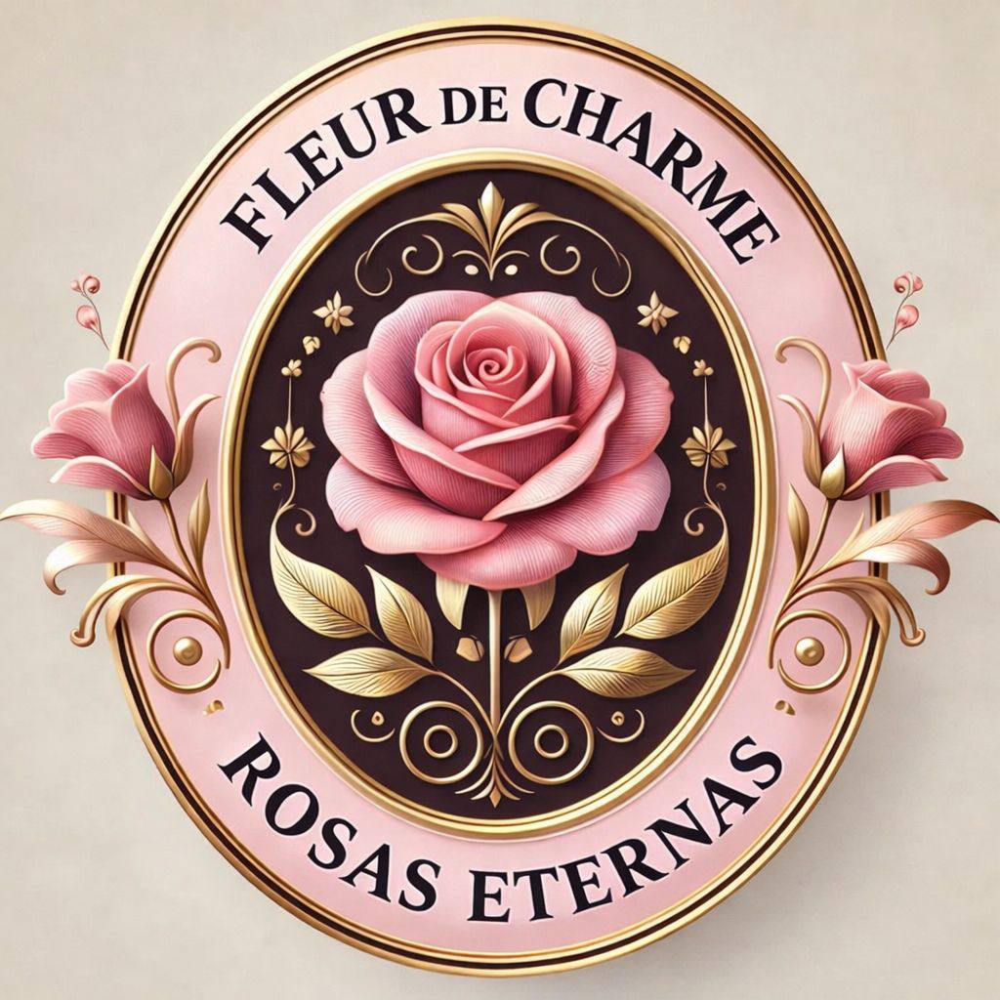

“¡Ups! Atrapado por el radar Fleur 🌹”
Mentira, es broma... ¡puedes ver todo! Pero seamos sinceros: ver estas fotos sin tener un ramo en la mano es como ver una pizza por Instagram: da hambre de tener una.
Tu medidor de 'detalles' está pidiendo un empujoncito. ¿Lo arreglamos ahora o dejamos que el fantasma de los ramos olvidados te persiga? 😂

"Es broma, pero si fuera tú, ya estaría pidiendo las rosas..."
- Tu Conciencia (que quiere flores) 😇